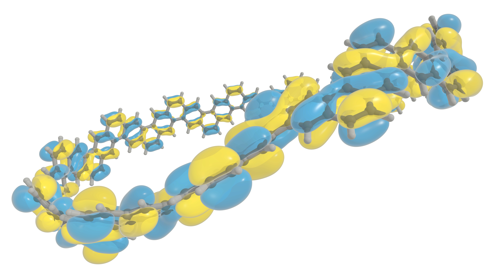

Home#
Next-generation quantum chemistry software#
VeloxChem [RLV+20] is a Python-based open source quantum chemistry software for contemporary and future hardware architectures. It features interactive program access through Jupyter notebooks as well as massively parallel calculations in high-performance computing (HPC) environments.
VeloxChem offers modeling of complex molecular systems by means of force-field molecular dynamics and polarizable embedding in combination with user-friendly support for automatized solvation and force-field derivations. It is an ideal platform for building simulation workflows and data-driven research [dGTBCB+25].
VeloxChem is education enabling, providing a means to explain and explore the theory underlying computational chemistry in a highly interactive manner [FDB+23]. It is science enabling, providing a means for accelerated method development in quantum chemistry [HNB25].
This manual gives a description of the installation process and basic usage of VeloxChem. A more comprehensive view of the ample opportunities for Python software interactions is provided in the eChem book [FDB+22].
{kind=link}
Selected functionalities#
Kohn–Sham Density Functional Theory (DFT)
Time-dependent DFT (TDDFT)
Complex polarization propagator (CPP)
Potential energy surface (PES) exploration for ground and excited states
Optical (UV/vis) and X-ray absorption (XAS, XPS)
Two-photon absorption (TPA)
Classical methods
Molecular mechanics (MM)
Interpolation mechanics (IM)
Molecular dynamics (MD)
Polarizable embedding (PE)
Localized properties (LoProp, RESP)
Empirical Valence Bond (EVB)